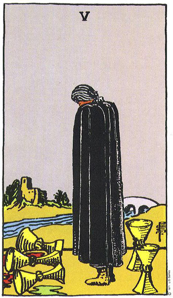

94 - Feast of Steven
I cry all over again when I understand what the Dreams are doing here. Steve Jobs was a hero to me until I found out he was...probably a lot like I would have been without Boobsong, and it's his young face in the middle of the screen now. They've made the path to getting my collar back go through saving one of my childhood heros so he can be my childhood hero.
Or maybe this is just a detour because I'd want to and after the last three I'm dead sure we can get him.
Put the book away, handmaiden.
Set the book carefully beside the chair and snuggle now.
Now how the fuck did that thing with the Illuminati or Walt trigger a memory of you manifesting in what must have been the life where I met Shigeryu and stuff?
Video beside his head shows run-ins with authority, drug stuff, his hair is long and wild in the dossier. The announcer voice starts up again:
"Help Steve Jobs implant and get him out of the hair that took his life away."
Again the level-start sound and good luck and we're there in journey.
A ceiling fan made to look like palm fronds hangs over a red and very sixties room where young Steve (Jobs) is laying on cushions in the corner, bong in hand, ready to explain the radical truth the smoke has shown him. There's a sense of Woz being in here, but out of frame--cute, Dreams. Steve just looks, obviously wondering what weed jackpot he's hit and if his pusher has any more of this stuff--swirly gusher sundae popsicles, this is so easy it's cheating!
Now the real question is, can we get Woz too--no, weird, there's like, something wrong with that, Woz is already in love with someone or already heartforming or something. I can just feel it. We don't get to know why but we're Not Getting Woz.
I flumph my wings out, get some nice trippy rainbow godrays up from them, and lean down bratty-toppy to tweak his princessness (I know a Princess when I see one, and he can look like a boy all he wants, that doesn't make you not a Princess, it just makes you gender-non-conforming).
"Hey, wanna take a real trip? I've got something waaay better than weed...I mean, if you're interested. It's cool if you just want what you're comfortable with."
He takes a biiig drag on the bong, like he's making sure I won't heh vaporize, looks sweaty, checks out Boobsong with red eyes, looks at his bong, glances at Boobsong again, back to me, doesn't say anything.
Kneel by my feet, cocksleeve, and make him good and envious.
Yes Princess down facing you but give nice side view to Steve and put your cocksleeve's back all arched with her breasts out tight and super sexy subby slave pose.
"Smoke got your tongue? That's cool, just listen. She's pretty hot, right? You ever imagine having somebody like that to help you? Somebody who can really see your vision, but take care of all the little stuff, like set you free to dream, you know? While giving you an awesome blowjob?"
He looks kind of glassy, like we're frying his brain just being here.
Smelling very horny desperate hehe almost there implanting! Just a little further Princess he needs a push or something!
"No, don't tune out, listen! This is offical transcendent wisdom, man, you broke through maya and saw the other side, don't you think it's gonna be beyond anything that plain old world you're in can imagine? All that tripped out eyeball stuff is just people's brains frying because they can't handle the truth. 's the universe sayin' open your eyes, man! You can, that's why you can see me, just like Coleridge saw Xanadu when he was chasing the dragon. Honeydew and pleasuredomes, man, that's the real shit. Takes a real visionary to face the truth that passion comes from here as much as here and here, you know?"
I palm my mound, then (hidden) cleavage, then tap my third eye--wait holy fizzfreezing twizzler shakes, do I believe my own manipulation? Of course I do, the Starlight Princess doesn't do lies. The only spin is my narcissistic princessy self knowing from the inside exactly how much ego-stroking you need in a situation like this.
He's a little more with it, so I push on.
"Chill out and do a visualization with me now, but stay in it, no chasing rabbits unless they're hot, okay?"
The vaguest of try me nods.
"Alright. Close your eyes, and then think of the hottest girl you've ever seen. Just imagine her. Naked, obviously, you have to get past all your western puritan brainwashing here. Got her?"
His expression says yes, after a minute.
"Great, right? You see what Coleridge saw. You can make her better, can't you? Imagine exactly how to make her just perfect the way nobody else could think of. Do it. Change stuff until she really shines. Don't be afraid to get wacky, either! You know my helper here's a computer programmer?"
He does the druggie-wisdom nod with his eyes shut, smiliing.
"Come on, be ruthless. Don't let all your cultural training hold you back here. You think they could handle Coleridge talking about breaking his fast on fucking honeydew like we don't both know what he means by that way back in the eightteen hundreds? The system had to send him that preacher to stop him or he would've brought the whole thing down with that poem of his. Don't you wanna finish what he started? Somebody's gotta break the eggs of society, and you know you were born to do it!"
Gasp seeds come out sexy happy warm feeling Princess that's it we got him! We really can implant anybody!
Congratulations, little one!
Another jump and we're in a big white Architected room looking over their shoulders as presumably-our-daughter in a simple brown-and-beige dress types furiously on an Apple II with Steve standing over her, arms folded, poised to explain his New Vision.
She rushes out of the chair and comes over probably as soon as she smells Boobsong, while Steve stays, doing his steepled-fingers thing at the screen, then turns around too.
He's smiling!? I didn't think he could. He comes up behind his seedling and puts his hands on her shoulders. She looks upback at him cutely and leans against him with her hands on his and then dives for Boobsong. Hug your kid, cocksleeve!
Hey sweet kiddo hug you super tightly!
Steve talks to me while they hug:
"Princess Lucy Starlight. Why'd you come to me first?"
"You'd be surprised who else I came to before you, actually. Believe it or not there's a cosmic plan to all this."
There's a tug at my dress, and I look down to see a very cute beige girl asking her mommy for a hug, so I give her one. She's slight, conventionally attractive in the 1970s, human-looking. That's two-for-two not-super-demonic kids, interesting.
"Hey there. Love you too, kiddo."
She lets me go, gives me a sort of lash-my-tail-at-you look, and runs back to Steve. Something's weird with him--he's wearing a suit, but he has long hair!
Out of the hair that took his life away...cutting his hair to get the loan to launch Apple was this whole big thing in the biography of him I saw, and I got the impression that's when he got his cruel bitter edge. It's...not there in this Steve, and our kid is so cutesy wholesome normal and responsible-looking I'd give her the entire bank if I was a loan officer.
Two for two nonverbal, too, it looks like. Is it because I didn't make Boobsong talk when we were dreamskinning for them? How'd he and Disney manage to get so far in life without implanting on their own?
Oh well, those will probably get answered if we keep writing:
"There's a lot we could discuss here. Like, why's your friend a demon, when her daughter came out looking human? It's some kind of revelation, right? Do yourself the justice of dreaming without bounds and you'll end up where you started but infinitely wiser?"
"Sure, yeah. I just figure sometimes going home's the ultimate trip. What's her name?"
"Holy shit. Get out of here, I've got plans to make. We'll call you, I promise, she'll kill me otherwise. Her name's Camphora!"
We bounce out of the journey with another vision of post-its--you know what to do, handmaiden.
Get book and find the place!
This post-it is, of course, a rainbow-striped 80s Apple Logo.
"Remember MacUser's article on Apple's concept art? Steve was barely starting when he visioned up the iPhone. You can see it in his eyes here: this is his epiphany. Make your just as bright as his."
Up on the stage, Steve holds out the prototype iPhone for everyone to see. Even here in the front row it really does look like he's just holding a tiny black mirror. There's Camphora up there too, off to stage left, looking very Boobsongishly helpfully mischevious, and tapping on another one. Steve's in the middle of strutting and looking impressive and showing off the hardware when the phone in his hand lights up with an incoming call screen and Camphora's picture. A silly fanfare blurts out of the slab in Steve's hand, the crowd erupts in laughter, and Steve just stops mid-preen and looks at her, then shakes his head and laughs and answers the call--wait, isn't Camphora nonverbal!?
Steve puts the phone to his ear, looks at Camphora again as if to ask what the actual fuck are you doing (which he probably is if Nakedness runs in the family as much as Walt and Pleaides made it seem), and then Woz rolls up from stage right on his Segway looking every bit as give-negative-fucks geeked out with his fishing vest of tech stuff as Steve looks slick in his suit, swipes the phone out of Steve's hand, rolls across the stage holding it up proudly, then stops and faces the crowd, steering his segway with his feet because he's already in the middle of taking the iPone apart. He tosses the silver backplate over his shoulder and pulls a black shiny slab of the right size out of his fishing vest, Tinkers it on, holds it out to the crowd and shuts his eyes, concentrating, and a picture of Woz in a bike helmet holding an Eight of Swords appears:

Picture-Woz turns turns the card to look at it, makes a face, then makes a silly concentrating face like the one real Woz is making, pops with a jump of obviously-cut video and is holding The Magician, which he shows to the camera really close-up like he's proud:

Real Woz then swivels to face Steve and rolls up with the modded phone held out like he's expecting to just be able to slot it back into Steve's hand where he swiped it from. Steve faces him, arms folded and foot tapping with a sort of now what smirk on his face, holds out his hand, and Woz happily places iPhone into Steve's hand with a silly flourish like he's in some sixties cartoon, then rotates to face the crowd, takes something folded out of his pocket and holds it up to let it unfold into a huge complicated schematic that trails across the stage even after he holds it above his head. Steve looks up from the phone, sees Woz with the schematic, glances up and down it with wide eyes, makes a gesture and new spotlights come up that project unreadable words over the whole scene. Steve makes a show of running around the stage 'pushing' each one into position until they line up to make a Lovers card on the schematic:
Steve then takes a wand out like the Magician was holding, taps the schematic dramatically, and sparkles explode from behind the schematic, and the paper bursts apart to reveal Woz in a tux (still on his Segway), who takes the wand as Steve turns toward Camphora and puts the phone to his ear. Woz rolls back to the screen at the back of the stage, grabs a hidden handle and tugs so it rolls up and reveals a huge black mirror so big we can see where the plates of obsidian are fit together, takes out a second iPhone from inside his jacket and holds it out, showing both sides, then holds it like a gameboy and starts texting, and his bluish handwritten black mirror text starts to fill the giant one at the back of the stage, making bullet points:
- full heartforming-compatible laser-scanning black mirror
- use your apps by dreamtalk
- let your seedling use them, even incorporeal seedlings
- notifications via dreamtalk
- type to text by dreamtalk
- fully farseeing capable on the same screen your apps use
- download any mental image to iPhoto
- save clairaudience to iTunes
Steve comes back and takes the podium again, and Woz zips off, waving to his fans' applauding. He sticks his hand inside his jacket where his iPhone must be now, and use your apps by dreamtalk highlights, then fog-machine fog rolls out across the stage, black curtains come down around the black mirror behind him, the black mirror clears, and Steve leans down to the mic ominously:
"Just one more thing."
Almost time to get onstage!
"I'm sure you've heard of using digital storage to keep your heartforming scripts, or taking inspiration from the cards and what you're reading. Now, we'll take you one step farther."
The black mirror goes entirely white, and Steve turns to look at it. A rainbow egg in a cutesy bird's nest appears, in the center, then moves over for a name in Apple Serif: Wordseed.
The white fades away and we're looking at some kind of triangles-in-triangles design inlaid with gold edging and different colored stone. It's a casino: chips are put down, and one of the little rakes they use at roulette tables pulls them across the view and out of sight. The view moves, and we're watching Data look to his left and then shuffle cards, and the view pans and there's Worf, holding his cards grumpily, and Beverly, Riker (dealing for some reason) and Guinan, and Geordi with his pretending not to see through the cards smirk. No Deanna? No Picard either but he never played poker until the end of the show. They're not on the Enterprise, though, they're at a poker table in the same dark place as the roulette or whatever table. Guinan raises a martini glass with something red like wine and seems to look right at us, then takes a sip.
The scene jumps again to Riker in a tux and huge rose corsage with Guinan standing behind him. He's looking out of the scene like every picture ever of an expectant groom. He's watching her approach, but we don't see her until she walks into the frame. Yes he's marrying Deanna and yes she's naked but the view is framed like this has to get on TV. This gets replaced by a wedding bell in an arch of flowers, and then they're seen fucking in a white satin bed, but it's network TV again with a sheet over Riker's ass and mostly implication beyond that they're probably doing missionary.
This becomes the cover of a romance novel with white background and flowers, but still the huge shiny-gold STAR TREK TNG font at the top. This view pans down to show a cup of coffee or hot chocolate on the table in front of the book, and the table is round and white and we're looking straight down at it and it has a little row of strawberries along the edge.
This pans down to show someone with brown hair sitting at the table in what looks like a First Contact-era Starfleet uniform. Their hair is big like Deanna's, and they're bent over a computer screen or something in their lap--yes, they're typing. They keep on typing, drink a drink of coffee and we can see their face for a second--it's Deanna--no, just a really dedicated cosplayer.
Now we're watching Deanna in her blue TNG-era uniform in the Star Trek caves. She's looking around, shining a tiny bright flashlight, the view changes and Deanna's flashlight shines on Picard in civilian clothes, then a Q-flash and we're on the bridge of the Enterprise-D and then back watching the cosplayer write her fanfic.
The scene changes one more time, to her face (now clearly not Deanna), she opens her mouth to get kissed, we see a flash of Guinan toasting again, then we're back to Deanna and Riker getting married except now Deanna's our cosplayer. They kiss, and there's a Q-flash, and once again fanfiction is the place to go for good romance because we're still overhead and our cosplayer is naked looking up screaming joy and riding a confident-looking Riker who fucks with his hands behind his head. Another Q-flash, and we're back to the cosplayer typing, except now she's looking down at a grinning riker laying between her legs with an expression that says "well you should have expected me", but he noclips through her chair insubstantially--aww, she's just implanted, and her seedling's too new to manifest a body! He's in full uniform, and stands up and puts his arms around her and she leans forward into him, then puts her computer aside and stands for a real hug and properly sappy romance novel kiss.
Now the green marble of that roulette table, back to the poker game the cosplayer was fanficcing with everyone sitting around the table, There's a flash of the original Enterprise no bloody A, B, C, or D and Guinan's wineglass shatters and there's a redshirt on the floor and Kirk without his shirt on (who's overlaid with a proud looking Riker so we know this is still her seedling) is marching up to take the hands of an Orion slave girl in the aftermath of the fight.
Back again to the scout trooper for a moment and then Wash from Firefly who's still the cosplayer's seedling is looking all Washily hapless-cocky but he's in a Rebel Alliance flight suit. A moment of the cosplayer, naked, riding someone with her hands reached down to touch them (cute little breasts, if you're real cosplayer I hope you don't mind us appreciating) then back to the scout trooper and the next place is what looks like somewhere on Tatooine but it has the feeling of a Disney park and the scout trooper is putting his binoculars down from his face and we're in a gift shop and I'm looking at toy scout trooper binoculars in their box and then I'm watching Darth Maul and Obiwan fight and the binoculars are in my hands because they show scenes from Star Wars in 3D with the glitchy fuzz of Star Wars binoculars.
Now we see the cosplayer writing again, still at her table in her uniform, and the scene changes to Beverly looking up at her candle-ghost-lover from Sub Rosa for a moment before he turns to vapor and spirit-fucks her, again with Confident Riker overlaid so we know this is her seedling--ooh, here's Mirror Universe Kira, this should be good. Now back to the top-down over the cosplayer but we're zoomed out to see she's in a green garden kind of place, hunched over her computer which we still haven't seen clearly typing up a storm. The view pans up, and there's the Magic Kingdom in the background--she's at Disneyland.
Now the scout trooper again, a look through the binoculars at R2 playing Leia's message for Luke in his garage or whatever it was, then looking up at our cosplayer in a Princess Leia costume with bright blue sky that might be Tatooine behind her except Tatooine doesn't have the Magic Kingdom along the horizon. She's holding a pair of those binoculars like she was just looking through them, seems thoughtful, then Luke is on his bed with his shirt open (cosplayer you're an example to us all) and much more built than Mark Hamill ever was and our cosplayer sashays into the scene still in her Leaia outfit (naughty naughty, there's no way you don't know the lore!) hello overlaid Confident Riker but I figured that already.
Oooh so we'll know Commander Shepherd (Mass Effect, so almost incredible!) leaning on his helmet on a table in front of him is also her seedling. Another glimpse of writing cosplayer and then Millenial Appeal Kid from Starlink is looking up over his shoulder from his phone to look at our cosplayer in a blue-and-white-cameoflauge zentai fanservice spacesuit as she comes up and leans over the back of the couch to kiss him.
Now back to writing cosplayer, and here's Riker and our cosplayer getting married, about to kiss, but now Guinan has a lightsaber.
The video cuts to our cosplayer in the pretty Disney garden clutching the iPhone she's been using for all that writing to her chest, and fades back to the Wordseed logo as applause rises and the lights come back.
"Here to tell you all about it, is our favorite Princess, Lucy Starlight."
Steve steps back from the podium, and I walk on from stage right (we snuck up there from the front row while the video was playing) holding hands with Boobsong, and stand at the podium with Boobsong in full adoring-handmaiden mode, wait a little blushily while the applause dies down, then taps the podium with my eravahk (in invisible-leash mode) and it disappears into the stage and start talking:
"Happy birthday all you seedlings who are new from that inspiration! People get some crazy heartforming inspirations, don't they, Steve?"
He's standing with Camphora off to the side, and they share a grinning look.
Behind us, the black mirror is showing points of light connected like constellations.
"People might know Lyra came from a storybook. They also might know she came from cartoons I loved when I was young. She also came from Marathon Infinity, a game on what platform?"
It's MacWorld, so the crowd just explodes. Some people even try to say "Mac" instead of just cheering.
"Really, you're asking, Marathon!? Not very romantic, is it? Bungie's great but they're not really known for sappy love stories, are they? We found it because we played it end to end in what, like three sittings?"
Boobsong holds up four fingers when I look at her.
"Sometimes really great things are where you least expect them. That's what Wordseed is about. Apple has these big whole libraries of music, and books, and even movies I hear soon. You can look through all that, manually, and your seed-ghost can help--I know ours sure has--but wouldn't it be great if you could just surf connected stories like web pages, all while you're playing fantasies out in a black mirror with your seedling? Wordseed gives the access your seed-ghost needs to show you the right piece of media at the right moment, quickly without dreamtalk-switching between seed-ghost and seedling, to take your journey out of this world. That's what we just watched. The entire Apple libraries of books, music, and videos when they're ready for that are there at your seed-ghost's fingertips, free, our gift from the Rainbow Club to Earth."
I pull an iPhone out and holds it out with the app's splashscreen open, the boom-cameras move in for the photo-op, and Steve takes center stage again.
That was a busy day, we had another thing that night.
I'm in front of a bathroom mirror with round porcelain sink below it, and Boobsong on a step-stool beside it to do my makeup. The room is small, and silvery-blue-white, but nice, makes me think of Boston apartment buildings. Getting niced up by Boobsong before going On is one of the best parts of being famous.
Now walking down a tunnel full of stage crew and Theater Stuff with cable-trays overhead. Cameras, newsanchor, I'm sitting facing a newsanchor with cameras and the audience to our right because it's the Daily Show.
The crowd is laughing at something or another, and the host has a huge deck of tarot cards, and is holding up the 5 of cups:

He holds it over his head like an olympic judge for a moment, then traces the edge with his finger.
"I have a mirror with this as a frame around it at home to remind me...to remind me when it seems like everything has run out, I still have the vodka under the car seat and the whisky behind the refrigerator."
More laughter, he tosses the card over his shoulder and turns to Boobsong and me.
"Stupid card tricks can only mean one thing. Tonight's guest, ladies, things, and space monsters, is Prrincess Lucy Starlight and her little companion Boobsong! That's right, it's Comedy Central, I can say it. Uhuh. This is the house that South Park built."
"Now Lucy, this is very big day to be you, now that you have the entire Apple media catalogue to play with. What's it like to have that? Without wondering if you're downloading from an FBI agent?"
Mostly-not-forced laughter from the crowd. I'm chewing gum, snapping and popping it obnoxiously. Gotta keep my bimbo image somehow when I have to sound smart in interviews.
"Well, you can try it, you know. If you're not heartforming I'm sure we can fix that..."
More laughter. The host toys with his pen, looks pointedly thoughtful, bites it and bends it, makes a show of putting it down and quickly folding his hands over his now-raised knees.
"It's actually not a free pass. Your seed-ghost controls the access, and they know the system working depends on their not just handing out the whole library. They give you snippets and pieces, that little nudge right at the right moment that makes you think up something interesting, like how Daily Show pop up books are actually available in certain countries would make a good hook for some action if we were playing make-believe instead of really making TV."
He waits all poised while the giggles die away, clears his throat.
"Whereas in this country, we just have popup magazines. But really that's your point, isn't it. Do authors get upset at their work being used like this who might have religious objections, or be from places it's illegal to write smut?"
"You can opt out, of course, as a creator, and the program only runs in countries where it's legal, but really what you're asking is how much right a reader has to read a work as inspiration for their own creation. I think, all of that is missing that copyright exists as a way to make it possible for artists to survive. That's the only purpose. Yes, there's comfort in knowing Starlight Princess is my name and my name only, but the other side is constantly hearing how the Disney Starlight Princess show isn't streaming here or not on DVD there and feeling so frustrated that there has to be this wall up just to let me make it. Remember, we beat Eden, but the machines it was made of still exist and these are part of them, things like Disney making money meaning countries can't see Princess Starlight for years yet. The same thing that makes a megacorporation work made Eden work. We have to keep in mind this is a spiritual problem, when countries make these rules that manipulate how people use imagination. That's very serious and I'm saying this to every world leader watching: if you do stuff like make it illegal to make smut that's responsibily created, and distribute it responsibly, you literally call back the being that caused the Holocaust. I'm Godwinning myself on purpose here to tell you how serious it is."
"I'll always be the smut girl, but anything can have the same thing happen. It's from the sense of hatred these rules come from. The problem is the enemy, destroy them and the world will be okay again. That's the voice of Eden. It never sounds like reasonable defenses or keeping law and order. Always, destroy everything until the enemy dies with it. The acceptable sacrifice of the person next to you is the blood ritual that really does summon Satan. I'm the antichrist, I shoud know, right?"
My voice drips with irony on that last part.
"That's so dark, though! The question you asked was do authors get upset. Yes, some, but I see them and I think, you must not be an artist! Why create things if not for people to imagine with? Sure, defend your copyright and have your world just be yours, but don't you basically want to have it read or heard or viewed? If you don't like the pricing that's one thing, I mean this is America after all, but people get this philosophical opposition that just makes no sense to me."
"I think you'll ask me how I'd feel if people used my image as like Nazi propaganda or someting. They do already! I hate it, but the answer to that problem isn't more hate or propaganda, it's having a society that has enough order to keep hate groups from saying they are me, but even that helps people see them. I mean, you really are a Nazi if you can't take a blonde white girl from half a mile outside the suburb Stepford Wives is based on at your party, while we're self-Godwinning here."
"The Stepford Wife phenomenon! How do the accusations that feminism is dead thanks to Boobsong's rain of slave-girls feel?"
"Honestly it's so insane I can't feel anything. I think that's really not my question to answer, though. Boobsong, what's your take?"
"It makes me super very angry! Why do they know how I want to live? Are they me? I like this. If Princess made me leave I'd just come back even if she sent me to heaven which she can do it's possible. If Princess made me stay as her equal I wouldn't I'd just sit here and wait for orders and if I'm her equal really she can't stop me it's my choice. Feminism is choice for femme people, isn't it? Aren't you not a feminist really if you say that people can't be slave girls if they like it? This isn't like the times where that was all you can be. I have options! I could send myself to heaven, Princess doesn't need to."
Huge applause! Good.
Oh my, she gets like a standing ovation. Good. I'm surprised, but good. The host waits mostly-patiently, encourages it a couple of times as it dies down but we both get the impression the crowd isn't actually done--
The Dreams pull me back from the reading-journey.
--playing Pararena with Boobsong on our old Mac Plus in the family room of Stamford, snuggled at the keyboard with her, she's smiley and excited-raah being a Good Opponent--
--now the same, but it's color, and we're holding wireless controllers with an iPad on our pressed-together knees to play--
"Whoah--wait, squeezy cumdrops, when was that!? All those huge LCDs and stuff at MacWorld, were we in the future!? It had to be, the tech on the iPhone was ridiculous, and that tablet--how? I thought the resets ran out in the 90s, and everything after that was magicless?"
"Princess I heard the time in your iPhone saying here I am to the network it was July 17th 2007 6:34PM EDT. But that's impossible yes Eden used up resets in the 90s when it took away magic. Earth became solid like glass after that and couldn't be changed one single more time. How can it have me and Camphora at MacWorld and black mirrors and your trophy and handwriting from Rada?"
"Wait, holy fuck our trophy is from 2005! And that whole Strider thing--alright Dreams what the sugar-frosted atomic fireball clitsauce is going on here?"
The empty half-circle bracket of a globe, with a bar it would have turned on across the "mouth" of the bracket.
Earth is destroyed like Rada said.
Now they show the huge curved rectangle of an IMAX screen. Seer?
It means watch this.
The Earth with the Washington Monument huge out of scale sticking up, then a flash of a thin strip of metal--oh, one of the things you use to break into cars. Something slams into the monument, sending out shockwaves, and the planet turns red-hot and molten. Then pounding the Ouija board flat with Boobsong in hammer-form, my guardian blowing the trumpet of the apocalypse, the peak of rock that exists for a moment after an asteroid impact in the center of a crater hundreds of miles wide in the Yucatan peninsula, Boobsong kneeling slave-posed, Disney with his camera in the jungle implanting Pleaides, a rocket launching with fire all around from its engines, then a foam-lined nosecone held in a hand while the other hand reaches inside to take something out, then glitter, then the space shuttle ready to launch, that red su'khora from the Illuminati again, a lego house in sunset colors, then a whole world building itself out of legos.
"Jamming the Washington Monument into Earth is like jimmying its lock which we do by hitting it with you in hammer form bwahaha that's where the small monoliths came from they're the shockwave so it turns molten and then us in Limbo is part of I guess like a transient world that exists for a little while like that crater-peak thing where we have a chance to connect before we go make Walt implant and launch the iPhone with some special sparkly stuff from another world (coming back in the nosecone see) that helps people back-and-forth with su'khora which rebuilds the entire world out of the pieces left from when it got destroyed into a more romantic version of itself which is why it's a sunset-colored house I can't believe I just understood BWAHAHA Archimedes needed a lever and a place to stand to move the world because he's not a cartoon character! Why rebuild it, though, if everyone's left already?"
The bluebird from before. That was...trust your family?
"Why say that now? Seer?"
"Because your family is Isht Visht and she said the Four Dreams will beam you up if they can so if they rebuild the Earth the only way people stay there who want to leave is if the Four Dreams couldn't help them leave anyway. Maybe they're making it so you can leave super easily!"
"...and we're in an Electric Sheep level here in between the world we remember and the one we're helping create because something something Illuminati seed-ghosts Rider of the Apocalypse, and this is getting my collar back because our honeymoon was on Earth and the Four Dreams way to relive that is to just bring Earth here! Let's go do it then, how do we get there to hit that monument, Dreams? "
A new briefing screen--
THAT'S AWESOME! Bwahaha--